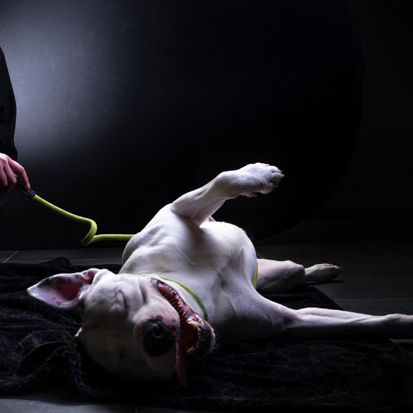

La Rencontre
J’ai pris contact avec Florence Marchal et ses employés et bénévols, via l’association La croix bleue de Belgique dont l’antenne se trouve à Floriffoux et après avoir expliqué ma démarche, certains utilisateurs se plaignant du manque de fonds financiers et de matériel vétérinaire, j’ai trouvé plusieurs hypothèses.

Lors de cette entrevue, j'ai été informé du manque de fonds financier auquel leur refuge pour animaux faisait face. Comme c'est un problème courant dans de nombreux refuges et associations pour animaux, j'ai considéré cela comme un défi à relever.
Découvrir la Croix Bleue de BelgiqueBien que certaines solutions aient déjà été mises en place, telles que l'organisation d'activités pour recevoir des dons (comme des promenades de chiens, par exemple), les dons ne sont jamais suffisants.
L'Interview
01
Rencontrez-vous des problèmes de manquements comme les croquettes, … ?
Oui.
On a un « sponsor », c’est une grosse boîte qui s’appelle MARS et il nous fournit du Pedigree.
Chaque fois, je demande ce que j’ai besoin, plus de croquettes petit chien, plus de pattés et cela n’est pas
toujours respecté.
On se retrouve souvent à cours de croquettes petit chien et au final, on doit nous-même les acheter. Alors qu’à
la base, c’est un sponsor et on le reçoit gratuitement par eux."
02
Vous récoltez des fonds grâce à des évènements ?
Oui.
On a aussi une tirelire pour que les gens donnent ce qu’ils veulent. Et on vend aussi des boissons ou des choses
que l’on cuisine, des gâteaux par exemple… Tout cela nous permet aussi d’avoir un peu d’argent pour pouvoir
acheter des choses nécessaires pour nos animaux."
Suite à cette interview, j'ai relevé plusieurs hypothèses telles que le manque de matériel vétérinaire, lesproblèmes avec les bénévoles, les problèmes avec MARS et le manque de visibilité. Cependant, c'est l'hypothèse du manque de fonds financiers que j'ai choisie de conserver pour l'explorer.
Les Solutions
Le parrainage d'animaux
L'objectif du parrainage d'animaux est de soutenir les soins des animaux hébergés dans les refuges en fournissant des ressources financières pour leur nourriture, leur abri, leurs soins médicaux, leur socialisation et leur bien-être général. Les donateurs peuvent choisir de faire un don unique ou de s'engager à verser régulièrement une somme d'argent pour soutenir l'animal parrainé. Les frais de parrainage varient en fonction du refuge et des besoins de l'animal.
Le parrainage d'évènements
Le parrainage d'événements aide les refuges à collecter des fonds supplémentaires pour financer les soins aux animaux, la nourriture, les frais médicaux, les programmes d'éducation et de socialisation, ainsi que l'entretien des installations. Il peut également aider à accroître la visibilité du refuge et à sensibiliser le public à sa mission et à la cause de la protection des animaux.

Un Résultat
Les fonds ainsi récoltés grâce au parrainage des animaux et aux partenariats avec les sponsors seraient exclusivement dédiés aux besoins des animaux, tout en permettant également de générer des fonds supplémentaires pour financer d'autres aspects du refuge. Cela s'ajoutent aux dons recueillis lors des activités organisées et aux fonds provenant des sponsors.
En somme, cette approche de parrainage d'animaux et d'événements vise à aider à résoudre le problème du manque de fonds financiers tout en offrant aux donateurs et aux partenaires locaux une opportunité concrète de soutenir les refuges pour animaux.